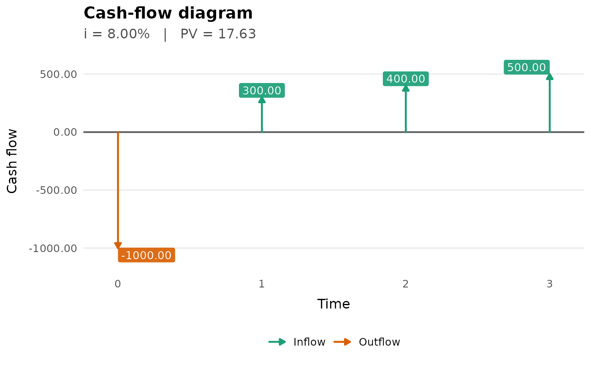
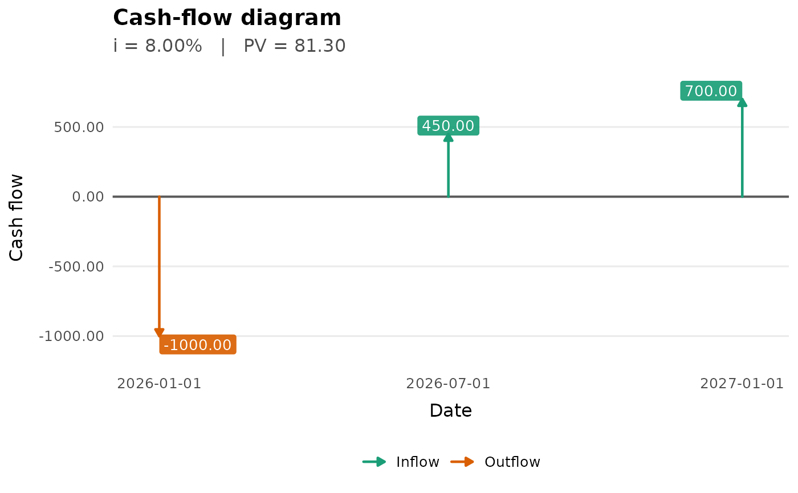
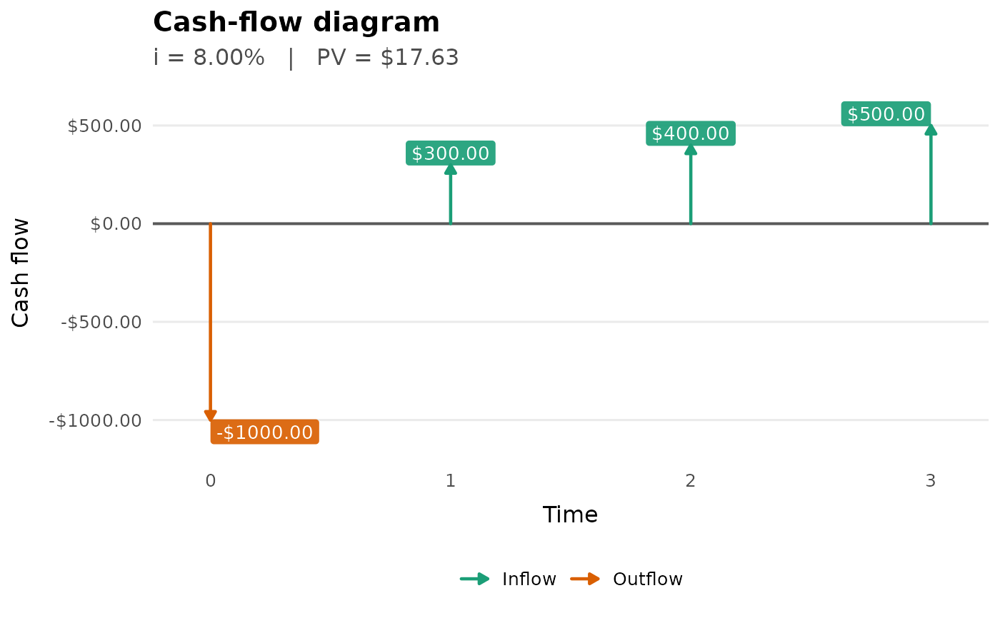

Creates a professional cash-flow diagram with arrows representing inflows and outflows over time, using compact actuarial notation.
Usage
plot_cash_flow(
.data = NULL,
C,
t = NULL,
date = NULL,
i = NULL,
i_type = "effective",
m = 1L,
PV = NULL,
payment = NULL,
time = NULL,
rate = NULL,
pv = NULL,
title = NULL,
subtitle = NULL,
x_label = NULL,
amount_label = "Cash flow",
financial = TRUE,
normalize = FALSE,
aggregate = TRUE,
show_labels = TRUE,
label_size = 3.5,
arrow_size = 0.8,
timeline_size = 0.7,
label_digits = 2L,
label_format = c("auto", "full", "compact"),
currency = "",
col_inflow = "#1B9E77",
col_outflow = "#D95F02",
date_labels = "%Y-%m-%d",
day_count = c("act/365", "act/360"),
...
)Arguments
- .data
Optional data.frame or tibble containing cash-flow columns.
- C
Numeric vector of cash flows, or a column name when
.datais supplied.- t
Optional numeric vector of times in years, or a column name when
.datais supplied.- date
Optional date vector, or a column name when
.datais supplied.- i
Optional annual interest-rate input used to compute present value if
PVisNULL.- i_type
Character string indicating the interest-rate type.
- m
Positive integer. Conversion frequency for nominal rates.
- PV
Optional numeric present value to display.
- payment
Deprecated. Use
C.- time
Deprecated. Use
t. Kept explicit to avoid partial matching withtimeline_size.- rate
Deprecated. Use
i.- pv
Deprecated. Use
PV.- title
Optional plot title.
- subtitle
Optional plot subtitle.
- x_label
Optional x-axis label.
- amount_label
Optional y-axis label when
normalize = FALSE.- financial
Logical. If
TRUE, positive cash flows point upward and negative cash flows point downward.- normalize
Logical. If
TRUE, arrow heights are normalized.- aggregate
Logical. If
TRUE, cash flows occurring at the same time or date are summed before plotting.- show_labels
Logical. If
TRUE, labels are shown next to cash-flow arrows.- label_size
Numeric text size for labels.
- arrow_size
Numeric line width for arrows.
- timeline_size
Numeric line width for the time axis.
- label_digits
Integer number of decimal digits for cash-flow labels.
- label_format
Character string controlling label notation. Use
"auto"to abbreviate values from one million onward,"full"for unabridged values, or"compact"for abbreviated values such as1.25M.- currency
Optional currency or unit prefix, such as
$.- col_inflow
Character color for inflow arrows.
- col_outflow
Character color for outflow arrows.
- date_labels
Character date-label format passed to
ggplot2::scale_x_date().- day_count
Day-count convention used when
dateis supplied.- ...
Reserved for future extensions.
Details
This function uses compact actuarial notation: C denotes cash-flow amounts,
t denotes times in years, i denotes the interest-rate input, and PV
denotes present value.
See also
pv_flow, fv_flow, irr_flow, standardize_interest
Other time-value:
accumulation_factor(),
discount_factor(),
future_value(),
fv_flow(),
irr_flow(),
irr_flow_multi(),
present_value(),
pv_flow(),
solve_value()
Examples
plot_cash_flow(
C = c(-1000, 300, 400, 500),
t = c(0, 1, 2, 3),
i = 0.08,
currency = "$"
)
 cashflows <- tibble::tibble(
t = c(0, 1, 2, 3),
C = c(-1000, 300, 400, 500)
)
cashflows |>
plot_cash_flow(C = C, t = t, i = 0.08)
cashflows <- tibble::tibble(
t = c(0, 1, 2, 3),
C = c(-1000, 300, 400, 500)
)
cashflows |>
plot_cash_flow(C = C, t = t, i = 0.08)

dated_flows <- tibble::tibble(
date = as.Date(c("2026-01-01", "2026-07-01", "2027-01-01")),
C = c(-1000, 450, 700)
)
dated_flows |>
plot_cash_flow(C = C, date = date, i = 0.08)

plot_cash_flow(
payment = c(-1000, 300, 400, 500),
time = c(0, 1, 2, 3),
rate = 0.08,
currency = "$"
)
